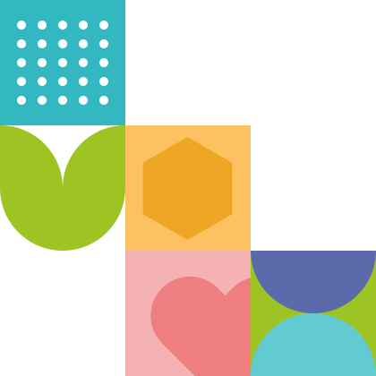

No dejes el desarrollo de tu hijo o hija al azar
Desarrolla las 12 inteligencias de tu hijo o hija con actividades con propósito, estructura probada y acompañamiento experto — todo el año, desde casa.



Tu hijo o hija aprende todo el tiempo, pero no siempre con propósito
Las pantallas, la rutina y la falta de estructura hacen que el desarrollo de tu hijo o hija quede librado al azar. No porque no te importe — sino porque nadie te dio las herramientas.
Quiero darle estructura →- "¿Lo estoy haciendo bien?"
- "¿Estoy aprovechando esta etapa… o se me está pasando?"
- "¿Cómo sé qué necesita mi hijo según su etapa de desarrollo?"
- "¿Cómo lo estimulo sin convertirme en su maestro?"
Quiero pasar tiempo de calidad con él o ella… pero termino improvisando o cediendo a la pantalla.
No buscas más información. Buscas claridad, seguridad y un camino.
Demasiadas pantallas, poco aprendizaje
El contenido digital entretiene pero raramente desarrolla. Conlú ofrece actividades con propósito que compiten con la pantalla.
Actividades sueltas sin hilo conductor
Pinterest, YouTube, grupos... tienes ideas pero no una estructura que las conecte con el desarrollo real de tu hijo o hija.
Vacaciones y suspensiones sin plan
Cuando no hay escuela, el desarrollo se detiene. Conlú te da estructura para continuar avanzando cualquier día del año.
No sabes si lo estás haciendo bien
Sin un mapa claro del desarrollo, es difícil saber si vas por buen camino o si tu hijo o hija necesita más estimulación en algún área.
Conlú no te reemplaza. Te fortalece.
No llega a decirte que lo estás haciendo mal. Llega a acompañarte. No enseña desde el miedo — enseña desde la conexión. En lugar de convertirte en maestro, te devuelve tu lugar: el de mamá o papá que juega, disfruta y guía con intención.
LA PROMESAConlú es el mapa que guía a tu familia en el desarrollo de tu hijo o hija.
No necesitas ser especialista. No necesitas pasar horas preparando actividades. Solo necesitas entender qué requiere tu hijo o hija en cada etapa y tener herramientas sencillas para acompañarlo con juego, vínculo y experiencias que dejan huella.
Todo lo que tu hijo
o hija necesita para
crecer integralmente
Y todo lo que
tú necesitas para
acompañarle
Kit mensual de actividades
+40 actividades nuevas cada mes organizadas por edad (0–2, 2–4, 4–6, 6–10 años) y por las 12 áreas de inteligencia.
MENSUAL · DIGITALEstructura semanal lista
Una guía por semana con las actividades organizadas para cada día. Sin planear, sin improvisar. Solo seguir el mapa.
SEMANAL · LISTA PARA USARMateriales imprimibles
Fichas, tarjetas, juegos y recursos visuales listos para imprimir desde casa. Sin comprar materiales especiales.
DESCARGABLES · PDFComunidad de familias
Grupo privado de familias que usan Conlú. Comparte avances, resuelve dudas y celebra logros con otras familias.
COMUNIDAD · PRIVADOPerfil de desarrollo del niño/a
Quiz de inteligencias múltiples que genera un perfil personalizado de tu hijo o hija y sugiere las actividades más relevantes.
PERSONALIZADOApoyo de especialistas
Acceso a sesiones de preguntas con especialistas en desarrollo infantil una vez al mes. Para resolver dudas específicas.
EXPERTOS · MENSUALLas 12 inteligencias de tu hijo o hija, todas desarrolladas, ninguna al azar
Basado en la teoría de Inteligencias Múltiples de Gardner y la Metodología Flor-Es-Ser® de Marié Amemar.
Scroll
Existencial
Sentido de vida, valores y trascendencia
Emocional
Identificar, sentir y regular las emociones
Intrapersonal
Autoconocimiento, autocuidado y autoestima
Interpersonal
Empatía, comunicación y vínculo sano
Colaborativa
Trabajo en equipo y contribución al grupo
Creativa
Imaginación, innovación, pensamiento
Naturalista
Conexión con la naturaleza, observación
Lingüística Verbal
Lenguaje oral y escrito, vocabulario
Kinestésica Corporal
Movimiento, coordinación y aprendizaje físico
Viso Espacial
Percepción del espacio, creatividad visual
Lógica Matemática
Razonamiento, patrones y problemas
Musical
Ritmo, melodía, percepción sonora y expresión
Las 6 áreas de desarrollo que acompañamos
Cada actividad nutre una o varias áreas del desarrollo de tu hijo o hija, para crecer en equilibrio.
Nutrición
Hábitos y alimentación consciente desde casa.
Motriz
Movimiento, coordinación y motricidad fina y gruesa.
Intelectual
Pensamiento, lenguaje y resolución de problemas.
Emocional
Identificar, expresar y regular las emociones.
Salud
Autocuidado, higiene y bienestar cotidiano.
Social
Vínculos, empatía y convivencia con los demás.
Se acabó improvisar: cada semana ya sabes qué sigue
Así se ve una actividad real de tu semana: con propósito, paso a paso y con materiales que ya tienes en casa.
De vaso a vaso
Inteligencias interpersonal, colaborativa y existencial
Propósito: desarrollar habilidades de comunicación. Saber escuchar a los demás.
Enseñar cómo hacer la actividad y ayudar con el movimiento de los vasos. Pon el ejemplo con los dos peluches.
El niño/a agarra un vaso y tú el otro. Tener una plática en sincronía con el agua: escuchar, oír y atender para que no se caiga.
El niño/a pone la voz a los peluches y ejemplifica la comunicación entre los dos, pasando el agua de lado a lado.
Ves el progreso real, bimestre a bimestre
Con el formato «Acompañando el Proceso» observas el desarrollo del niño/a en las 12 inteligencias, y el equipo de Conlú te acompaña y asesora con base en él.
Emocional
| Observa si el niño/a: | Semana | Lo intenta | Lo hace con ayuda | Lo hace de manera independiente | Con qué frecuencia lo hace | Sabe aplicarlo en otros contextos |
|---|---|---|---|---|---|---|
| Identifica las emociones en su cuerpo. | 1 | ✓ | 80% | Sí | ||
| Puede identificar que si se siente incómodo/a, es porque la emoción intenta decirle algo. | 2 | ✓ | 60% | Sí | ||
| Busca que sus decisiones lo lleven al equilibrio y al bienestar. | 4 | ✓ | 50% | Sí | ||
| Asocia los olores con las emociones. | 5 | ✓ | 40% | No | ||
| Reconoce cómo suena él/ella mismo/a. | 6 | ✓ | 30% | No |
Una hoja por bimestre, para cada una de las 12 inteligencias.
Empezar es simple.
Elige tu plan
Según el momento de tu familia: Conlú Descubre, Crece o Florece.
Sigue el mapa semanal
Actividades listas para usar. Sin preparar clases ni improvisar.
Disfruta y observa florecer
Más vínculo, avances reales y la tranquilidad de ir bien.
Lo que de verdad te llevas.
No se trata de cuánto dura o cuántas actividades trae. Se trata de cómo te vas a sentir.
La tranquilidad de saber qué hacer en cada etapa.
Se acabó improvisar: cada semana ya sabes qué sigue.
Ves crecer a tu hijo o hija de forma completa, no solo en lo académico.
Nunca te sientes solo: otras familias caminan contigo.
Todo listo para hoy, sin gastar horas buscando en internet.
Ves el progreso real de tu hijo o hija y confías en que vas bien.
Un plan para cada momento de tu familia.
Los tres incluyen el bono Florecer Desde Adentro con Marié Amemar. Precios de lanzamiento por tiempo limitado.
Conlú Descubre
"Quiero probar y empezar a acompañar a mi hijo o hija con propósito."
Precio regular $67 USDLa mejor forma de conocer la metodología y experimentar Flor-Es-Ser®.
- 5 calentamientos + 5 cierres diarios
- 30–40 actividades de las 12 inteligencias
- Actividades recreativas
- Guía semanal + materiales imprimibles
- Bono: Florecer Desde Adentro
Acceso inmediato · compra en 2 minutos
Conlú Crece
"Quiero acompañar con estructura y compañía."
Precio regular $237 USDPrograma completo para acompañar un bimestre del desarrollo, con estructura y acompañamiento.
- Todo lo de Conlú Descubre
- Planeación estructurada de 8 semanas
- Tablas de desarrollo por etapa
- Comunidad privada + plataforma 6 meses
- Seguimiento del avance del niño/a
- Bono: Florecer Desde Adentro completo
Acceso inmediato + bienvenida a la comunidad
Conlú Florece
"Quiero comprometerme todo el año con su desarrollo."
Precio regular $997 USDToda la experiencia de desarrollo, sin volver a preguntarte qué hacer.
- Planeación completa de 40 semanas
- Actividades recreativas + inglés
- Lives mensuales con especialistas
- Comunidad + tablas + materiales
- Seguimiento del desarrollo todo el año
- Bono: Florecer Desde Adentro para toda la familia
Formulario breve → sesión de bienvenida → pago
Lo que cambia cuando el desarrollo tiene estructura
500+
FAMILIAS ACTIVAS
+70%
RETENCIÓN A 3 MESES
4.9
VALORACIÓN PROMEDIO
Y algo más: tú también floreces.
Cada plan incluye acceso a Florecer Desde Adentro, la filosofía Flor-Es-Ser® impartida por Marié Amemar. Porque acompañar a un hijo o hija empieza por el adulto que lo acompaña.
No solo transformas su desarrollo — te transformas tú.
Mira cómo funciona desde adentro
Preguntas frecuentes
¿Necesito ser maestra o especialista?
No. Conlú te guía paso a paso; tú solo acompañas con juego y vínculo.
¿Cuánto tiempo al día necesito?
Tan poco como 15–20 minutos. Tú marcas el ritmo según tu día.
¿Sirve si mi hijo o hija ya va a la escuela?
Sí. Complementa lo académico y fortalece el vínculo y el desarrollo integral en casa.
¿Para qué edades es?
Las actividades se adaptan por etapa de desarrollo en edad preescolar (entre 3 y 10 años).
¿Y si siento que no es para mí?
Cuentas con nuestra garantía de satisfacción. Empiezas sin riesgo.
¿Cómo accedo después de comprar?
Acceso inmediato en Conlú Descubre y Crece; en Florece te recibimos con una sesión de bienvenida.
Empieza sin miedo.
Garantía de satisfacción
Si en 7 días sientes que Conlú no es para tu familia, te devolvemos tu inversión. Queremos que empieces desde la confianza, no desde la duda.
Prueba Conlú gratis con 5 actividades listas para hoy
5 actividades diseñadas para las áreas de desarrollo más importantes de tu hijo o hija esta semana. Sin registro complicado — solo tu email.